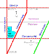
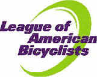
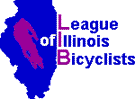
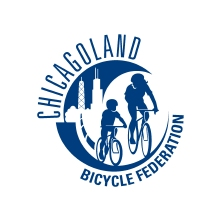
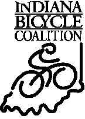

If you're not sure how to get to the meeting, click on the map below for directions...or click here for a printer friendly map that you can print out.

Quick Picks
The FOS Bulletin Board
The FOS Club Calendar
Monthly meeting information
FOS Club Ride information
Easter Ride Brochure
Welcome to Folks on Spokes.
Folks on Spokes Bicycle Club provides members with a wide variety of cycling activities while making an impact on the state of cycling in the Chicago south suburban area.
Primarily a bicycle touring club, Folks on Spokes is at the forefront of cyclist advocacy, working with various government agencies to insure that the needs of cyclists are considered when road improvements, trail construction and laws regarding cyclists are reviewed. The club has had much success in influencing area governmental bodies to remember cyclists.
Folks on Spokes provides members with opportunities to ride with cyclists of similar riding abilities, with a variety of weekly routes from 15 to 100 miles in length. We have something for everyone.
Our monthly meetings are held on the fourth Thursday at 7:30 pm at the Flossmoor Village Hall, 2800 Flossmoor Road, west of the Metra tracks and east of Governor's Highway.
|  |  |  |  |  |
Copyright © 2007 Folks on Spokes Bicycle Club
All Rights Reserved